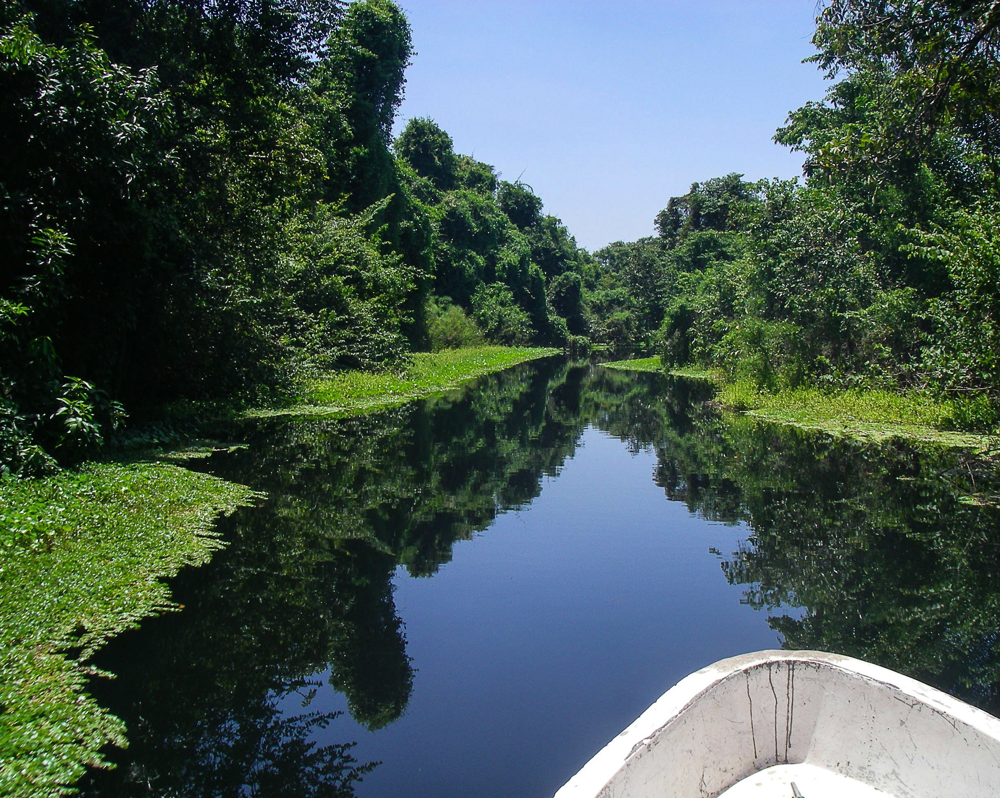

Nature
Fuerte de Cabañas y Casa Kinich
Refugio De Vida Silvestre Cuero Y Salado, Atlántida

Cuevas de Taulabé, Comayagua
El Jardín Botánico Lacentilla, Tela, Atlántida
Cataratas Pulhapanzak, Lago de Yojoa

La Ceiba, Atlántida
Parque Nacional Cerro Azul Meámbar - PANACAM, Lago de Yojoa
Parque Nacional, La Tigra
Parque Nacional, Celaque
Parque Nacional, Pico Bonito

Lago de Yojoa
Ruinas de Copán
Islands
Roatán, Islas de la Bahía
Utila, Islas de la Bahía
Guanaja, Islas de la Bahía
Cayos Cochinos, Islas de la Bahía
Amapala, Valle

Islas de los pájaros, Valle
Archeology and History

Ciudad Blanca, Gracias a Dios
Rastrajón, Copá
Parque de Aves y Reserva Natural Montaña Guacamaya "Macaw Mountain", Copán
Parque Arqueológico Ruinas de Copán, Copán
La Fortaleza de San Fernando, Omoa, Cortés
El Fuerte de San Cristóbal, Gracias, Lempira
Parque Eco-Arqueológico de Los Naranjos, Lago de Yojoa

La Fortaleza de Santa Bárbara, Trujillo, Colón
Gastronomy and Culture

Gastronomía sureña
Galería Sixtina
Museo de Comayagua
Museo del Hombre Hondureño
Centro histórico de Tegucigalpa
Finca Santa Isabel, Copán
Tourist Places

Islas de la bahía
Roatán

Utila

Tela, Atlántida

Puerto Cortés

Lago de Yojoa
Parque Nacional Pico Bonito

La Ceiba, Atlántida
Fortaleza de San Fernando Omoa